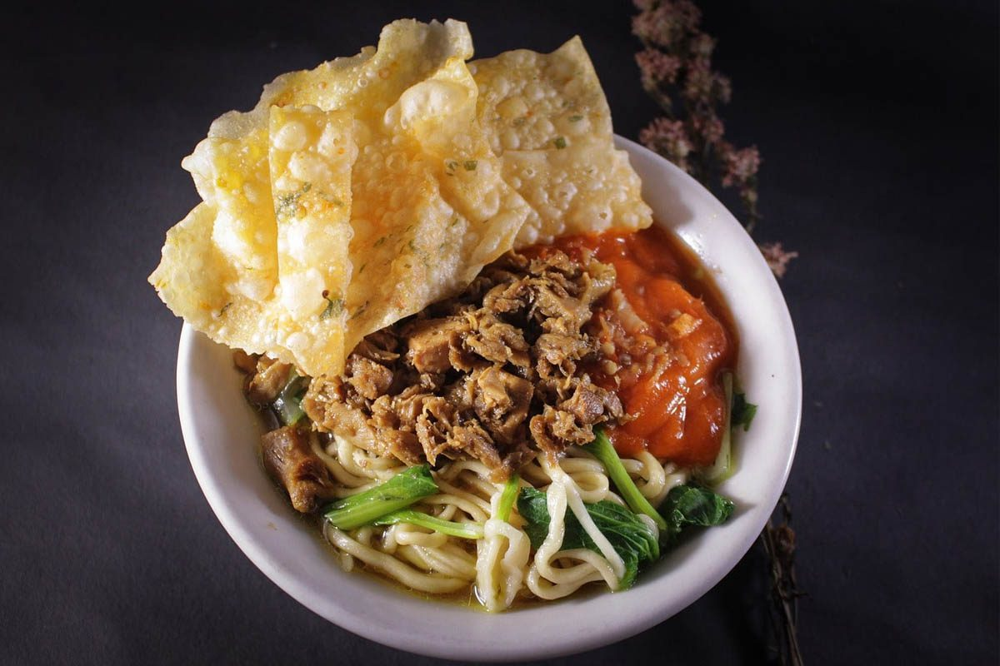

Mie Ayam Daging Tikus

Mie Ayam, or Indonesian chicken noodles, is a savory dish with flavorful toppings. Begin by preparing the chicken topping: sauté 2 cloves of minced garlic and 1 chopped shallot in a pan until fragrant, then add 300 grams of diced chicken thigh, and cook until browned. Add 2 tablespoons of sweet soy sauce (kecap manis), 1 tablespoon of soy sauce, a teaspoon of oyster sauce, a pinch of salt, and a dash of white pepper, stirring well. Let it simmer for 10 minutes until the chicken is tender and the sauce is thick. Cook 200 grams of egg noodles until al dente, then drain and toss with a teaspoon of sesame oil. Assemble the dish by placing the noodles in a bowl, topping with the savory chicken mixture, and garnishing with sliced green onions and fried shallots. Serve with a side of blanched bok choy, and enjoy with a dash of sambal or a squeeze of lime for an added zest.
Bakso Recipes
-
Meatballs (Bakso Balls):
- Ground beef (or a mixture of beef and pork)
- Tapioca starch (or cornstarch)
- Salt and pepper
- Garlic, finely minced
- Baking powder (optional, for texture)
-
Soup (Kuah Bakso):
- Beef broth (can be homemade or store-bought)
- Garlic, minced
- Shallots, minced
- Ginger, sliced or minced
- Indonesian sweet soy sauce (kecap manis)
- Salt and pepper to taste
- Chinese celery or regular celery, chopped (optional)
-
Additional Ingredients (Optional):
- Sliced beef (for additional meatiness)
- Carrots, thinly sliced
- Cabbage, shredded
- Bok choy or choy sum
- Fried shallots (for garnish)
- Sambal (chili paste) or fresh chili (for spice)
-
Condiments (Served on the side):
- Indonesian soy sauce (kecap manis)
- Sambal (chili paste)
- Lime wedges
-
Noodles (if serving with noodles):
- Egg noodles (cooked separately according to package instructions)
How to Make Bakso
- Prepare the Meatballs:
- Mix ground beef (or beef and pork mixture) with tapioca starch, salt, pepper, minced garlic, and optional baking powder until well combined.
- Form small meatballs using your hands or a small scoop. Set aside.
- Prepare the Soup:
- In a large pot, heat beef broth over medium heat.
- Add minced garlic, shallots, and sliced or minced ginger. Cook until fragrant.
- Season with Indonesian sweet soy sauce (kecap manis), salt, and pepper to taste.
- Add Chinese celery or regular celery (optional) for additional flavor.
- Cook the Meatballs:
- Gently drop the meatballs into the simmering broth.
- Cook until the meatballs float to the surface and are cooked through, about 5-7 minutes.
- Add Additional Ingredients:
- If desired, add sliced beef, thinly sliced carrots, shredded cabbage, and bok choy or choy sum to the soup. Cook until vegetables are tender.
- Assemble and Serve:
- If serving with noodles, cook egg noodles separately according to package instructions.
- Place cooked noodles (if using) in serving bowls.
- Ladle hot soup with meatballs and vegetables over the noodles.
- Garnish with fried shallots and serve with Indonesian soy sauce (kecap manis), sambal (chili paste), and lime wedges on the side.